The night breathes.
We played several hundred whole nights on every battlefield and recorded every ten seconds of them, and counted every point of damage each weapon landed beside four others. Two things came out. The night had one wall, at your first evolution, and then either a long easy walk to dawn or a death: arm the new Tides mode and each boss becomes a beat, with a reliquary where it falls. And a few weapons were quietly taking the whole meter: every weapon now does its share.
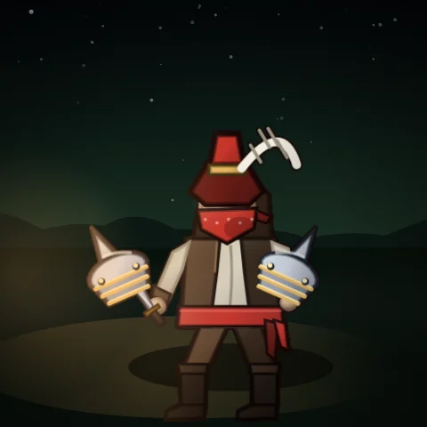
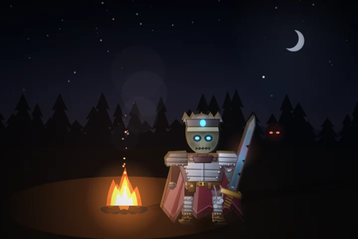
Every boss is a beat.
Every battlefield stopped raising its pace at about 18:00, and its last swarm came by 20:00. After that only creature health grew, while an evolved build multiplied, so a lucky night was safe from minute eleven and an unlucky one had no second chance. Arm Tides on the button beside Hyper, before you begin, and the horde moves with the bosses. It opens once you have held any night to dawn, and leaves the ordinary night exactly as it was. The Nightly and the Eclipse Arena play without it.
The horde gathers
In the forty seconds before a boss arrives, creatures come faster and faster, up to one and a half times the pace.
The horde falters
For about twenty seconds after a boss falls, creatures come at a third of the pace, then ease back. A breath to feel what you just became.
The night deepens
Once each of the first four bosses' lulls is over, creature health steps up, easing in over a minute, and the Watch tells you when. It deepens only as far as you can take it: if the last minute and a half has been draining you, or brought you low, the step is smaller or does not come at all, and the Watch says so: The night deepens, deepens a little, or holds back.
The deep night pays
The deeper you let it go, the richer the next reliquary: after a full step, three gifts are twice as likely and five three times. Every step you take adds to the night's score, up to a fifth more over a whole night.
Built to take hits
What counts is the health the night drains from you, not how often it hits you. A thorns or lifesteal build that stands in the crowd and heals every blow back is doing fine, and the night treats it that way.
No flat walk to dawn
Once a battlefield's last wave of creatures has arrived, the pace keeps climbing, up to about 80% by dawn, as far as the last deepening went. A build that has run away with the night no longer walks to dawn.
Bosses pay out in power, not only gold.
Across the nights we played, not one survivor who failed to evolve a weapon saw dawn, and most of them fell between ten and fifteen minutes. A boss used to leave gold and a handful of gems. With Tides armed, it also leaves a violet reliquary where it fell.
A reliquary holds one gift, three gifts one time in five, or five gifts one time in twenty. Fortune improves the odds. Each gift is a step down the road your build is already on, taken in this order:
- An evolution that is ready. A weapon at rank 8 with its passive learned evolves on the spot.
- The passive a finished weapon is waiting on. Rank 8 but missing its pairing? You learn it.
- A rank on the weapon nearest its evolution.
- With nothing left to grow, Might.
A brimming reliquary can take a weapon from rank 7 to evolved in one touch. That is the chase: good luck at a boss can carry you ahead for a long stretch, and a stingy one leaves you to earn it.
No more dead cards.
Every weapon was measured with each damage passive at nothing and at its cap. Two did nothing, or worse than nothing.
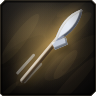
Velocity
Speed alone reaches the same creatures a little sooner. At its cap it was worth −12% to +3% to most weapons, and it made a herd or a seeking bolt worse. Every rank now also makes projectiles hit 7.5% harder. The card and the damage shown on your weapons say so.
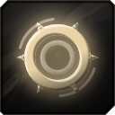
Expanse on Gale Chakram
Area threw the ring further, so it turned past the crowd and spent the extra flight on empty ground. It made an evolved chakram 21% weaker. The ring now widens as it reaches further.
None fades, none costs you.
Each discovery's two weapons measured together at 5:00, 9:00, 14:00 and evolved, with and without it.
Shadowflame
Each burst marked the creatures it touched as already struck. An evolved Umbral Bolt passes through everything, so it skipped them and lost full hits to smaller bursts. Once a bolt passes through everything, the flame now burns inside it instead.
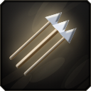
Truestrike
Homing bent a spread of arrows onto one target, which was slightly worse against a crowd until the volley evolved. The arrows now also strike harder.
Moonlit Herd
The extra beast and the moonburst mattered early and faded to almost nothing. The herd now runs harder too.
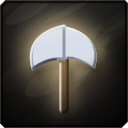
Radiant Gyre
The pulse is worth plenty early and little once the gyre evolves. The blades now bite harder too.
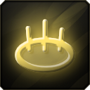
Hallowed Hands
Mostly a mend, but the wider ground now reaches further.
Twenty weapons, twenty fair shares.
A tester's Skybreak did 59% of a night's damage. Every test we had measured a weapon alone, and alone every weapon sat in one band. In a build it is different: whatever reaches out first (chains, bouncing discs, seeking bolts) kills the crowd before it arrives, and the weapons that strike close to you starve.
So we measured it the way the meter sees it: random builds of five, on the real horde, counting only damage that lands, in four ways of playing. A survivor who circles close to the crowd or one who keeps their distance, with every damage passive or only a few of them. And at three points in a night: rank 3, rank 5 and evolved. Every weapon's damage, and how much it grows with each rank, is now set so it takes a fair share of whatever build it is in. Damage to bosses is where it was: bosses have their own numbers, and those were held in place.
Skybreak
Thirty jumps with almost no falloff meant one cast cleared the screen. It now jumps fourteen times and loses more with each. Arcweb starts lower and grows more with every rank.
Reckoning and Mote Cascade
Discs that bounce through a crowd, and motes that seek it out, reach everything first. Both come down once evolved; their damage to bosses stays.
The weapons at your side
Rend and Mend, Circle of Dawn, Gyrestorm, Temple Breaker and Verdant Gaze were last on every meter. Each now hits much harder in company, and no harder on a boss.
| Weapon | Evolved, 20:00 | Rank 5, 9:00 | Rank 3, 5:00 |
|---|---|---|---|
| SkybreakArcweb | 56% → 19% | 18% → 18% | 24% → 23% |
| ReckoningJudgement Disc | 48% → 20% | 23% → 18% | 30% → 23% |
| Mote CascadeSeeking Motes | 32% → 19% | 20% → 20% | 18% → 18% |
| ArrowfallVolley | 26% → 20% | 23% → 19% | 23% → 19% |
| RazorgaleGale Chakram | 23% → 19% | 26% → 21% | 19% → 17% |
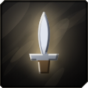 Steel FlurryKnifestorm | 20% → 21% | 24% → 20% | 22% → 18% |
| Ruin BoltUmbral Bolt | 18% → 20% | 20% → 20% | 16% → 17% |
| Fallen StarCinderfall | 18% → 19% | 15% → 20% | 12% → 18% |
| Blighted EarthBlightfield | 17% → 19% | 25% → 19% | 27% → 20% |
| Tether of AnguishGrave Tether | 17% → 20% | 19% → 21% | 12% → 16% |
| 16% → 20% | 26% → 19% | 26% → 20% | |
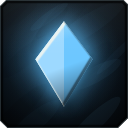 DeepwinterRimeshard | 16% → 19% | 20% → 20% | 14% → 17% |
| 16% → 18% | 14% → 20% | 11% → 16% | |
| Hallowed GroundHallowed Ring | 15% → 20% | 23% → 19% | 26% → 20% |
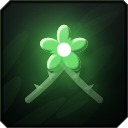 EverbloomThornbloom | 14% → 19% | 20% → 19% | 26% → 21% |
| Temple BreakerIron Palms | 12% → 20% | 19% → 20% | 18% → 19% |
| GyrestormAxe Gyre | 11% → 22% | 23% → 20% | 18% → 17% |
| Verdant GazeVerdant Lance | 11% → 19% | 11% → 18% | 18% → 26% |
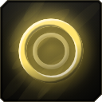 Circle of DawnDawnpulse | 10% → 20% | 11% → 19% | 11% → 19% |
| Rend and MendReaving Arc | 10% → 21% | 10% → 19% | 11% → 20% |
Each weapon's share of what the five weapons in its build did, in sixty random builds, averaged over the four ways of playing, on the Pale Wastes at Professional. A fair share is 20%. Evolved, every weapon now takes 18% to 22%; at rank 5, 18% to 21%; at rank 3, 16% to 26%. Full nights played by the bot on the same seeds reach dawn about as often as before.
DZ stands a little longer.
DZ, the Graveblade
Across four battlefields at Professional he reached dawn 3 times in 8 and fell soonest of anyone. More health, and more mending, which Blood Rite also turns into damage.
Also in this patch
Standing stones wait for you
On Highmoor, a shrine no longer sinks while you are inside charging it. It goes once you step out after its time is up. Its ring now shows the time it has left, the way Beans does.
Beans says what you bought
Buying eggs puts a word over her head: how many, and the damage and health they gave.
The night has light
The field now darkens toward midnight and warms toward dawn, in each battlefield's own colour. You stand in the watch fire's glow, every spell lights and tints the ground it crosses, danger glows red, the brightest magic blooms, and mist, fireflies, dust, snow, wisps or drizzle move through the air. Balanced quality keeps the light and skips the bloom.
The night has a pulse
The score used to sound the same in a full field as an empty one. As the night gets dangerous, a second band now comes in under each battlefield's music: a kick, a backbeat on that battlefield's own drum, a shaker and a bass line walking the chords. It is all there by the time things are really bad, and it goes as the danger does. The melody gets an echo of its own, the music darkens toward midnight, and in the last stretch before dawn a high bell comes in over it.
You can hear what you hit with
Every weapon landed with the same blow. Now the blow carries its school: fire hisses, frost clinks, arcane fizzes, holy rings, nature knocks, shadow thuds and steel rings off. An elite goes down with a crunch and a low ring, not the same thud as the crowd, and a boss falls with a great bell and a chord rising over it. Beans rings her cart bell when she sets up, says hello, and rolls away when she packs up.
Wolves hunt, ghouls guard
Spirit wolves and ghouls were one creature with different numbers. Now they do different jobs. Spirit wolves run as a pack: when a boss, an elite or something that shoots is in reach they all go for it, each bite harder for every packmate already on it, and a pounce mauls what is around it. Ghouls stay close and turn on whatever is nearest you; their claws slow what they rake and leave it rotting, taking more damage from everything, your weapons included, for a few seconds. Rotting creatures shed green motes.
Every calling has its passive
The Graveblade, the Ruinseeker, the Druid and the Monk each had an epic passive that deepened their power. The other eight callings now do too, offered once you hold the calling: Undertow (Spellflood), Hallowed Mending (Radiant Barrier), Ruthless (Opportunist), Stalker's Patience (The Quarry), Slow Burn (Seething Blood), Bountiful Tithe (Reaper's Tithe), Deep Roots (Waystones) and Fervor (Conviction).
Four of them also work without their calling, the way Curdled Light works without Blood Rite, and are offered to a build that can use them. Undertow: gathering gems cuts the wait of your slowest weapon (with Greed's Pull). Hallowed Mending: overheal becomes a small Ward that takes hits first (with any healing). Ruthless: a crit finishes an ordinary creature left low (with Precision). Slow Burn: every blow you take Smoulders into extra damage (with Thorns or Ironhide). The card shows whichever half you would get.
The meter's share, lit
The percentage on each damage and healing meter row is bold and tinted to its source, like the name and figure beside it.
Ruin Unbound
Every union was balanced with no passives taken, and that is where Ruin Unbound hid. It fired two seeking, piercing, splashing bolts, so each rank of Duplicity added half again, where the median weapon gains about a tenth. Velocity and Expanse stacked on top. With every passive at its cap it took 45% of a build's damage. It now fires three lighter bolts: the same union without passives, and a third less for every bolt Duplicity adds.
Hallowed Ground and Blighted Earth, layered
Ground that heals paid out once per layer: every zone you stood in healed you on its own. Haste and above all Perennial make zones overlap, so with every passive Hallowed Ground healed 153 a second where Grave Tether healed 96. Now, standing on several layers of the same ground heals you once, at the best layer. The heal on each is raised so that without those passives both mend exactly what they did.
Boil Over and the Spring actually mend
Health is kept in whole points, and every heal was rounded down. A heal that trickles in every frame, like Boil Over's 3% a second or the Spring's pools, is a fraction of a point each frame, so it rounded to nothing, every frame, and never healed at all. The fraction now carries over to the next frame.
A second job costs damage
A weapon that heals you, or slows what it hits, and deals as much as one that only deals damage is simply better. Grave Tether and Blightfield were taking more than a fair share of the damage while healing best of all. Now the weapons with a second job sit below the pure-damage ones, and the balance tests check it: healers at about four fifths of their damage, weapons that slow at a little over nine tenths. Measured in the real waves with every passive at its cap, 120 builds of five.
Skybreak, Moonbrand; Knifestorm and Axe Gyre up
Skybreak topped the meter in 12 of the 28 builds it was in; now 3. Moonbrand came down with it. Knifestorm and Axe Gyre, the two lowest, came up. Every pure-damage weapon now takes 19% to 23% of a five-weapon build.
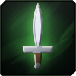
Stormcall
It ate Skybreak and Gyrestorm and was flat worse than them: 61% of their damage. A union is allowed to be a little less than the pair, since it frees a slot, but not that much less. Its blades circle close, where Skybreak had reached far out, so it gets reach back through its own lightning: more blades, and more of its cuts call the storm.
Sanctuary
With every passive at its cap, Sanctuary took 56% of a build's damage. It is not the strongest union (it is below the middle against a crowd that cannot die, and weak on a boss), but at full Expanse its ring covers the ground the horde stands on, so it took almost every kill. It now pulses less often, a little narrower. Its healing a second and its damage to a boss are kept where they were.
Axe Gyre, Arcweb and Judgement Disc
A new sweep flagged these three: Axe Gyre gaining nearly five times its damage from Expanse, and Arcweb and Judgement Disc far behind. Both readings came from a field of creatures that never die. In the real waves, with every passive at its cap, all three take between 18% and 23% of a five-weapon build, where a fair share is 20%. They are unchanged.
Storm of Steel and Truestrike, on a boss
Ring weapons hit a boss harder because most of a ring flies past it. Truestrike, carried into Storm of Steel, made every knife seek, so none flew past, and all fifteen landed at the full bonus: ten times what the union did to a boss before. A shot that seeks only because of a discovery now keeps no boss bonus above normal. Volley with Truestrike is affected the same way, less sharply.
Wolves and ghouls, drawn at last
Your summons were their card icons, lit and bobbing about the field. Now they are creatures. Spirit wolves gallop on real legs, pale fire with a hot core, their paws thinning into mist, a ghost of each one streaming behind it and motes of its light lifting off its back. A pounce lands as jaws snapping shut on the thing, and whatever the pack is hunting wears its mark, a turning ring. Ghouls are hunched grave-corpses with rot glowing through the hide and at the rim of the body, dragging their knuckles in a pool of it, dripping from the claws. Their rake sweeps a visible arc exactly as wide as what it hits.
Ghouls break loose
A strong build kills everything before it reaches a ghoul's short leash, and a tester's ghouls never touched anything. Now a ghoul that has raked nothing for 4 seconds, while there is a crowd further out, runs to the thickest of it and bursts: rot over a wide circle, six rakes' worth of damage, everything it touches left rotting longer. They go one at a time: when one breaks loose, the others start their wait again, so a pack of ghouls sends one out every 4 seconds rather than all at once. It rises again at your side 6 seconds later, clawing up out of the ground, and a small ring by you counts it back. A ghoul with work at your side never leaves it: a breakout is half what a working guard does.
Card numbers stay in their columns
A weapon card's numbers sit in two columns, and a row a few pixels too wide for its half (Duration on Axe Gyre or Thornbloom) took the whole width, its figure pushed to the far edge. The arrow's spacing now closes up first, then the numbers set a size smaller, and only then does a row span the card.
The blow that ended it
The defeat screen says what got through, when, and how hard it hit: "Mossback Stonehide got through at 28:30, and they hit you for 246. 66.6k creatures did not make it to dawn."
Waystones are built, not handed out
A stone rose every three seconds, ember, spring, gale, over and over, whatever you did. Now each stone is built by a way of fighting and rises where you stand when it is full. The Ember fills from damage you deal close to you, and erupts as it comes up before it burns everything near it. The Spring fills from healing, overheal included, and rains pools around you: step into one to mend. The Gale fills from ground you cover, and near it your weapons fire faster. A brawler raises embers, a healer springs, a kiter gales. Each has its own bar on the HUD, and stones of different kinds stack their effects. Measured at Professional against the old stones, the calling is worth the same; it is just yours to steer now.
What Thorns ranks do
The Thorns card said only that attackers take damage back. It now says how much: every rank returns another 10 plus 60% of the blow, so rank 5 sends back 50 plus three times what hit you.
You can see what heals
Cards for anything that heals you, a weapon, a passive or a blessing, carry a small green plus on their mark.
The build sheet, reordered
Your blessings now sit above the build: beside the tabs on the pause screen, and under the Watch's log on the results screen, where your eye lands first and there was empty space. Passives run four across and discoveries three where there is room, so less scrolling. The damage and healing meters are bars in each source's own colour, with its mark, a bright name and a bold figure, instead of a faint green wash.
The run graph is back on the results screen
A Show graph button on the results banner swaps the run's figures for its timeline (damage dealt and taken a second, across the whole run) and Show figures swaps them back. The banner keeps its size either way, and the next run's results open on whichever you chose last.
The banish hint where you look
"Pick a card to banish it from this run" sat at the far right edge of the screen. It is now centred between the Reroll and Banish buttons and the cards, and a size larger, and the cards have not moved.
A beating is easier on the ears
A tank build takes a hit every time its grace runs out, and every one was the same full-weight grunt. Now each blow you take within a few seconds of the last comes in a little quieter, settling about a third lower under a steady beating, and a few seconds of peace brings it back. A heavy blow, one that takes a real share of your health, is always heard in full.
Adaptive quality
Dynamic resolution is now Adaptive quality. When a fight gets too heavy for your machine, it drops the bloom first, then the mist, then the night lighting, and only then draws at a lower resolution. It keeps each step only if frames actually got faster, and everything comes back at the start of your next run. On a machine with no graphics card this took the heaviest fight from about 55 ms a frame to about 33, with the night lighting kept.
The mix, rebalanced
Measured off real nights, the music sat 12 to 16 dB under the effects in every fight, so under a wall of hits it was not quiet, it was gone. It comes up, the hit chatter comes down a little, and the whole game is louder: it used about a quarter of the level it could, so most players had their volume turned right up to make up for it. You may want to turn your volume down a notch.
Beans follows the bosses
She came on a clock of her own, which put her at 30:30 and brought her back to the breather just after she had taken your coin. Now she sets up just after a boss falls, while its gold is on the ground, skips the last boss before the finale, keeps her breather visit and packs up when the fight begins. Her timer says which boss she is waiting on.
Ranks at a glance
Level-up cards show a rank as a row of ticks instead of "Rank 6 to 7": solid for the ranks you have, dim for the one the card gives, empty for the rest. The card under your cursor flickers its new tick on. The line it frees goes to the weapon's numbers, and a number too long for half the card takes the whole width.
Fields keep their art
With more than four fields on the ground every one of them turned into a plain ring. Now the newest field of each weapon keeps its runes, mire or brambles, however busy the ground gets.
The Nightly is random again
The Nightly drew its survivor, battlefield and oath from the date, and dates next to each other drew almost the same thing, so Abbot Eisen came up night after night. The draw is now well mixed: over a year every survivor comes up about as often as any other. Today's Nightly changes.
What Velocity shows
The damage on your weapon cards and the pause sheet now includes Velocity's harder hits.